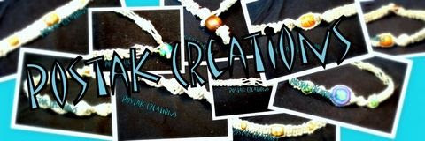
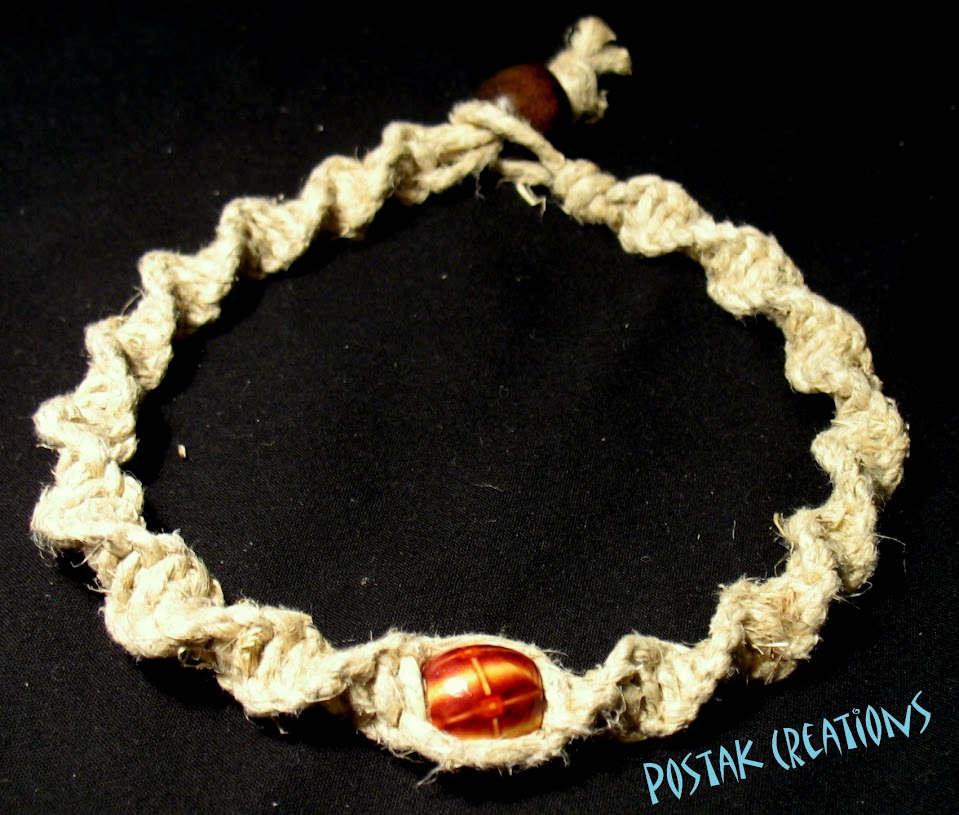
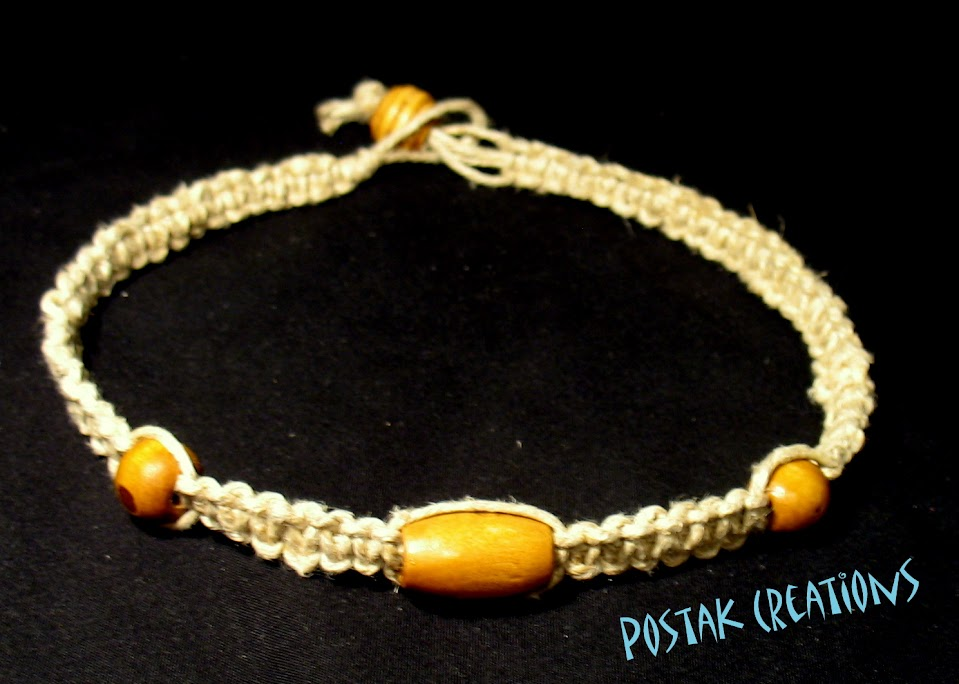

Knots Page
Learn how to tie the knot with your creativity!
Interested in tying the right knots? Congratulations you have made it to the right spot! Below there are different sets of step-by-step instructions complete with images. You are welcome to navigate through to each one to have a look.
Here you will also find instructions for how to tie beginning knots.
1 / 3

Actual images are under construction.
2 / 3

Actual images are under construction.
3 / 3
Actual images are under construction.